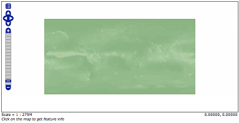
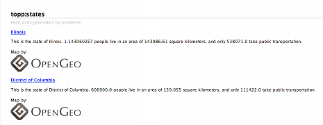
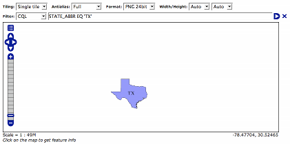
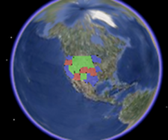
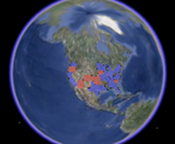
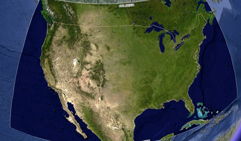
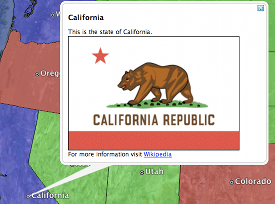
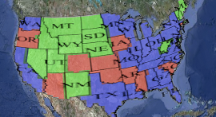

Release Testing Checklist¶
A checklist of things to manually test for every release.
Artifact size¶
The binary release of GeoServer should be somehere around 45 - 46 megabytes.
Demos¶
Note
These are no longer available in GeoServer 2.0, we’ll probably reinstate them later
To do the demo page, http://localhost:8080/geoserver/demo.do, and test all of the demos. This includes:
- WFS-T demo
- GeoRSS demo with Google Maps, Virtual Earth, and Yahoo Maps
- WMS Overlay demo
- WMS Example
Sample requests¶
Go to the sample request page, http://localhost:8080/geoserver/web/?wicket:bookmarkablePage=:org.geoserver.web.demo.DemoRequestsPage, and execute every sample request, ensuring the correct response for each request.
Map preview¶
Go to the map preview page, http://atlas.openplans.org:8081/geoserver/web/?wicket:bookmarkablePage=:org.geoserver.web.demo.MapPreviewPage
Click the OpenLayers link next to nurc:ArcSample
Go back to the map preview and click the GeoRSS item in the drop down choice next to topp:states
Go back to the map preview and click the OpenLayers link next to topp:states.
Enable the options toolbar and specify the CQL filter:
STATE_ABBR EQ 'TX'
KML¶
Go back to the map preview and click the KML link next to topp:states
Open the result in Google Earth
Zoom out as far as possible and notice the smaller states (on the east coast) disappear.
Close Google Earth
Warning
If you do not shut down Google Earth it will cache information and throw off the next steps.
Go to the feature type editor page for the topp:states feature type
Change the KML Regionating Attribute to “SAMP_POP” and change the KML Regionating Strategy to “external-sorting”:
.. image:: states_kml_config.png
Submit and Apply changes
Go back to the map preview page and again click the KML link next to topp:states, opening the result in Google Earth
Zoom out as far as possible and notice the smaller population states (green) disappear
Go back to the map preview page and click the KML link next to nurc:Img_Sample, opening the result in Google Earth
Zoom in and notice tiles load
Follow the link http://localhost:8080/geoserver/wms/kml?layers=topp:states&mode=refresh , opening the result in Google Earth
Notice the KML reload every time the camera is stopped
Edit the description template for the states layer as follows:
This is the state of ${STATE_NAME.value}. <img src="http://www.netstate.com/states/symb/flags/images/${STATE_ABBR.value?lower_case}_fi.gif"/> <br> For more information visit <a href="http://en.wikipedia.org/wiki/${STATE_NAME.value}">Wikipedia</a>Refresh the KML by moving the camera and click on a placemark
Append the parameter “kmscore=0” to the above link and open the result in Google Earth
Notice the rasterized version of the KML
Follow the link http://localhost:8080/geoserver/wms/kml?layers=topp:states&mode=download , saving the result to disk.
Examine the file on disk and notice a raw dump of all placemarks for the layer.
GeoWebCache¶
- Go the geowebcache demo page, http://localhost:8080/geoserver/gwc/demo
- Click the EPSG:4326" link for ``topp:states
- Zoom in and notice the tiles load.
- Repeat steps 2 to 3 for EPSG:900913